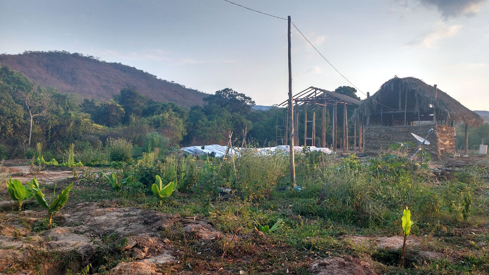
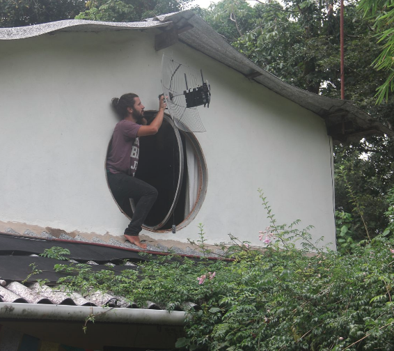

In 2012, after developing software for food networks, we started to work with Sensorica on software that could support economic networks of any kind. The software was called NRP, for Network Resource Planning. Here's an overview slide deck.
We created a monolith, which is a single system with one big database where all the users have usernames and passwords and log into the same app.
This is actually a good idea when you are developing something new that has never been done before, as we were doing. As Martin Fowler says, ""monolith first".
NRP worked, and has been forked several times and is now working for at least three networks.
But every solution brings its own set of new problems, and so it was with NRP.
NRP was too big and did too much.
It was too overwhelmingly difficult to understand for new networks. It was very flexible and configurable, but of course, then it needed to be configured, and somebody needed to understand and configure it, which in practice meant that one or two people in the network understood everything and most of the other people understood very little and complained a lot.
And a new network had to put on this whole humongous set of clothes when all they needed was new socks. They couldn't start with the first small component they needed, they had to eat the whole thing. All of which, as you can see, also leads to awkwardly mixed metaphors...
It was also too difficult for new programmers to work on. They needed to understand too much before they could get anything done, and they were also forced to work with the technologies chosen by us, the original implementors.
So anyway, we met these people from Enspiral who proposed to start an Open App Ecosystem and thought we should break NRP up into a suite of tiny apps that all worked together. And we bit. Which has developed into 5 years of very nice discussions about how to do it. And attracted a swarm of people and projects.
So how do suites of tiny open apps work together to form economic networks, which is, after all, what we are trying to support? The early discussions decided they need to use common vocabularies and protocols. Thus the ValueFlows project emerged from those early proposals.
...is a set of common vocabularies to describe flows of economic resources of all kinds within distributed economic ecosystems. it's being used now by FairCoop and LearnDeep and will be used by all of our 3.5 paths for the future.
That's from 2014 when we first decided on this new direction until now.
We are old people and can't do this work forever. So part of this direction is a succession plan. We are talking to and organizing groups of younger people who understand what we have been trying to do, in some cases better than us, and can take if forward. And this new direction will also require total technical makeovers for both of us, so we will be starting over again as trainees.
The younger people are taking over, and all of the paths to the future are led by them.
Besides breaking up the monolith into smaller components, we decided they also should use a distributed architecture where different people and groups could have their own identities and apps and sites but still all communicate with each other and form networks using the ValueFlows vocabulary.
There are now experimental projects going forward in each of these distributed protocols:
We're not sure which of these experiments will succeed or take off and become popular. And each of those protocols has advantages and disadvantages and will be better for some situations than others. So we are happy to have more than one experiment in motion. If all of them succeed, then we want them all to be able to interoperate with each other.
We think the future is a combination of social and economic networking. Ivan Minutillo is developing a set of user interface components that accomplishes that combination, and can be used by any of those protocols.
Lynn and pospi are developing a GraphQL API that works with Ivan's UI components and can also be used by any of those protocols.
If you look at Ivan and pospi's websites (linked to their names) you can see that they have each been doing a lot of thinking and writing about the new social-economic networks that they are working toward.
We'll start the discussion of the paths with Holochain, because it will set up some themes that we'll mention in the other paths.
Holochain says it is "what comes after blockchains": that is, providing similar transactional security to blockchains, but without the huge energy consumption and slowness. While blockchains claim to be decentralized but are actually multiple replicants of the same chain, Holochains are distributed and agent-centric, where each agent has their own different data that can be connected to other agents in networks.
David Hand, who took over the development of NRP with Sensorica, and pospi, are working on the HoloREA project to develop ValueFlows-based economic networks in Holochain.
ActivityPub is a standard specification for federated social networks. It generalized several previous similar protocols, Sites using any of those protocols can talk to each other in the Fediverse.
We'll use ActivityPub in a similar agent-centric configuration as Holochain. However, the transactional security that Holochain promises has not yet been developed for ActivityPub, so we will need to develop it.
Mayel de Borniol has been building CommonsPub which will be the base for the ActivityPub economic network project.
SSB is already agent-centric and provides strong security, but does not yet provide for economic interactions like transactions or production.
Luandro Vieira is developing the economic network potentials of SSB. The amazing project is a Community Economic System in a quilombola village in central Brazil using wireless mesh networks.  
"Solid (derived from 'social linked data') is a proposed set of conventions and tools for building decentralized Web applications based on Linked Data" (also known as the Semantic Web). While the ValueFlows vocabulary has been specified as Linked Data using Semantic Web formats, it has also been specified and can be used as plain JSON (and eventually hashtags in text messages). It is ecumenical.
The SolidBase project is developing a budgeting system for Solawis, Solidarity Agriculture associations. Lynn of the Mikorizals helped them set up a ValueFlows model for their budget, but we have not been very involved in the project beyond that, which is why this rates .5 of a path. But we love them a lot anyway.
Please send us an email if you want to contact us directly.
 mikorizal software
mikorizal software